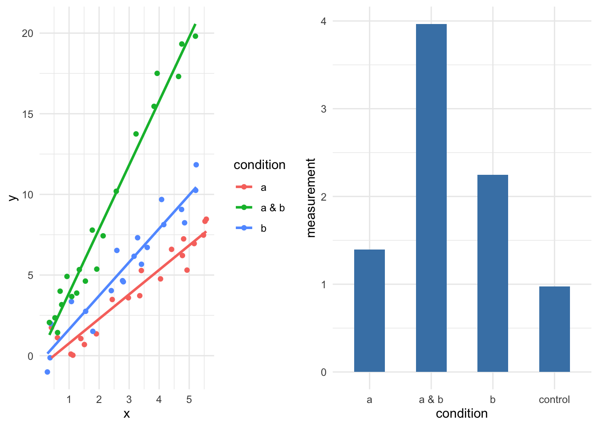
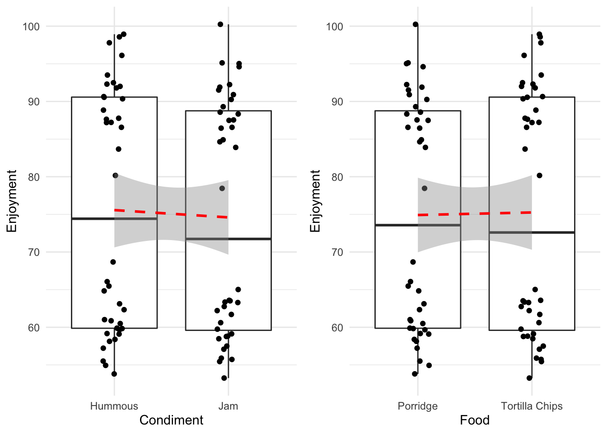
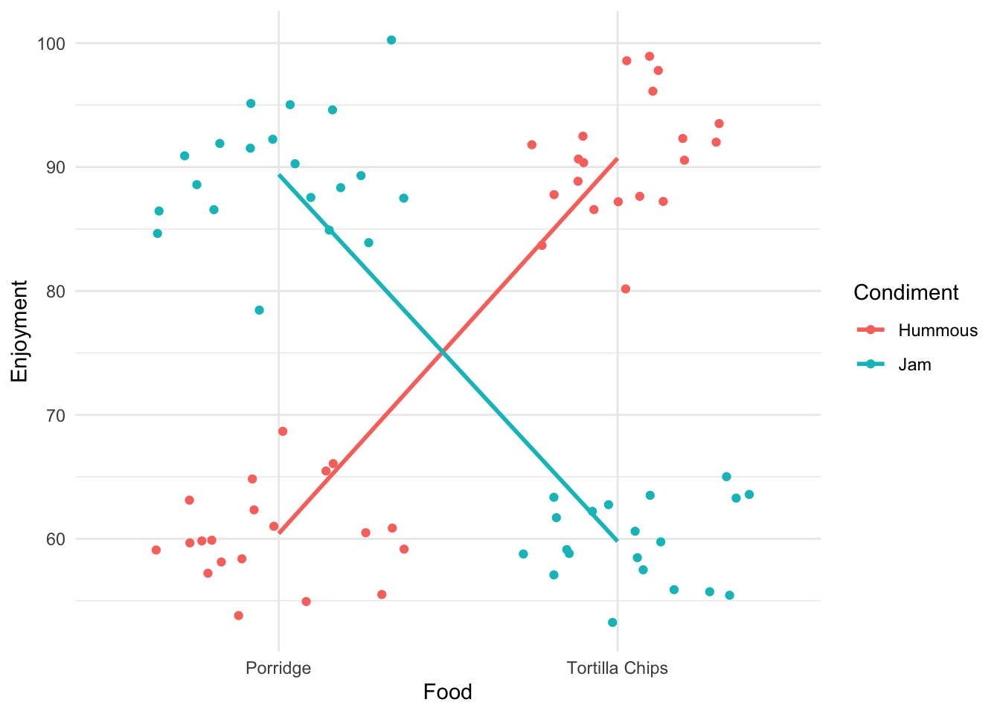
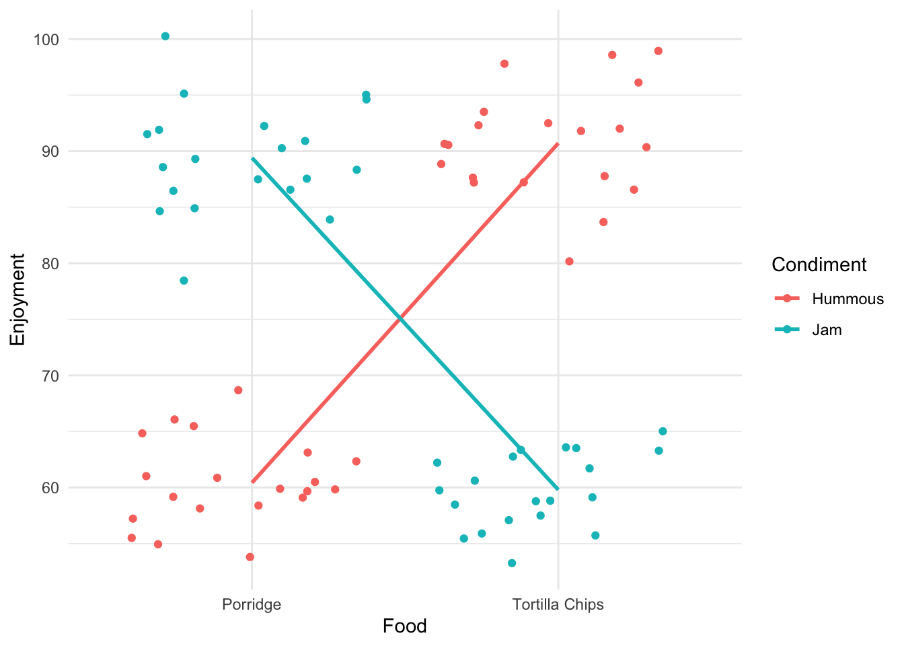

Topic 7 ANOVA and linear models
- Questions
- How can we compare many variables and factor levels
- How can we check for interactions between treatments
- Objectives
- Learn how to specify more complicated linear models
- Understand how ANOVA works with a linear model
- Understand how to spot interactions from plots
- Learn how to deal with interactions in ANOVA
- Keypoints
- Working with many variables is the same as working with just one
- ANOVA is a tool for specifying comparisons between variables in linear models
- We must take care to account for interactions between the variables
7.1 Comparing groups in a single variable
In the last section we looked at using the linear model to compare two groups, in this section we’ll look at using it to compare more than two. One thing to note is that (for now) we’re still working with only one explanatory variable, the groups we are talking about are basically different values that the one variable can take. In the PlantGrowth data the variable is called group and the values it takes are ctrl, trt1 and trt2.
You’ll be pleased to know this is where the pay off comes. Any number of groups (and later any number of variables) is no more complicated than the two we’ve already done.
We can visualise the process as simply being a case where we have more than one line to examine. Consider this figure, here we draw the categorical scatter plot and draw lines joining all the different group means that indicate the different comparisons we might choose to do with these data.

So we’ll need to know how to read the linear model for each of the given lines. Let’s jump in and work through that. First let’s build a linear model with a variable with multiple groups.
##
## Call:
## lm(formula = weight ~ group, data = PlantGrowth)
##
## Residuals:
## Min 1Q Median 3Q Max
## -1.0710 -0.4180 -0.0060 0.2627 1.3690
##
## Coefficients:
## Estimate Std. Error t value Pr(>|t|)
## (Intercept) 5.0320 0.1971 25.527 <2e-16 ***
## grouptrt1 -0.3710 0.2788 -1.331 0.1944
## grouptrt2 0.4940 0.2788 1.772 0.0877 .
## ---
## Signif. codes: 0 '***' 0.001 '**' 0.01 '*' 0.05 '.' 0.1 ' ' 1
##
## Residual standard error: 0.6234 on 27 degrees of freedom
## Multiple R-squared: 0.2641, Adjusted R-squared: 0.2096
## F-statistic: 4.846 on 2 and 27 DF, p-value: 0.01591Great! so we handle the extra levels of the variable nearly perfectly. There are two lines of coefficient results, the first showing the gradient between the ctrl and trt1 and the second showing the gradient between ctrl and trt2. The ctrl data has clearly been used as a common reference - this is the default design in the function, the first group in the data becomes the common reference. Here we get away with it, as we do want the first level to be the common reference. When you need to change the order, you can set the reference level explicitly.
df <- PlantGrowth
df$group<- relevel(df$group, ref="trt2")
model2 <- lm(weight ~ group , data = df,)
summary(model2)##
## Call:
## lm(formula = weight ~ group, data = df)
##
## Residuals:
## Min 1Q Median 3Q Max
## -1.0710 -0.4180 -0.0060 0.2627 1.3690
##
## Coefficients:
## Estimate Std. Error t value Pr(>|t|)
## (Intercept) 5.5260 0.1971 28.032 < 2e-16 ***
## groupctrl -0.4940 0.2788 -1.772 0.08768 .
## grouptrt1 -0.8650 0.2788 -3.103 0.00446 **
## ---
## Signif. codes: 0 '***' 0.001 '**' 0.01 '*' 0.05 '.' 0.1 ' ' 1
##
## Residual standard error: 0.6234 on 27 degrees of freedom
## Multiple R-squared: 0.2641, Adjusted R-squared: 0.2096
## F-statistic: 4.846 on 2 and 27 DF, p-value: 0.01591And now we see the trt2 as common reference against the ctrl and trt1 groups.
In these data only trt2 vs trt1 appears to be significant according to the linear model model2 but we did need to create two models to do this, which is a bit of a statistical mess. If this seems longwinded or illogical, then that’s fair. The two models have the same data and specification so should have the same results in - it was really just the way we were ordering things in the data that was different. The real problem is just one of bookkeeping.
The linear models are rich and not all the comparisons that can be done with them can easily be written in summary(model). To answer specific questions from an analysis technique for getting specific comparisons (or contrasts in the statistics jargon) from linear models has been invented, that technique is called ANOVA (Analysis of Variance).
7.2 One-Way comparisons - groups in a single variable
The situation where we have just one variable is called a ‘One-Way’ ANOVA.
Now that we have a solid way of thinking about contrasts as the slope between the categories, we can think of ANOVA as a tool for pulling out the significances in the best way. All we have to do is learn how to specify the contrasts for ANOVA.
Every time we do ANOVA we need a model to feed into it. Here’s the most common way ANOVA is done in R, with the aov() and TukeyHSD() functions, you’ve probably seen this before.
## Tukey multiple comparisons of means
## 95% family-wise confidence level
##
## Fit: aov(formula = model)
##
## $group
## diff lwr upr p adj
## trt1-ctrl -0.371 -1.0622161 0.3202161 0.3908711
## trt2-ctrl 0.494 -0.1972161 1.1852161 0.1979960
## trt2-trt1 0.865 0.1737839 1.5562161 0.0120064It seems to do the job, though the ‘flavour’ of ANOVA it does is sometimes limited and applies only when the standard assumptions of ANOVA are met.
A scary thing that statisticians often say is that such-and-such a method is only applicable when certain assumptions are met. This can make scientists nervy about applying any methods in case it is wrong. I would like to encourage you to relax about this aspect. Most statistical tests are pretty robust to against violations, and if anything tend to get more conservative (IE, generate fewer significant results) in these cases. There are a few assumptions and even a few types of data that we need to be aware of. I dedicate some space in the last chapter to understanding where these trip-ups might happen.
A better alternative than the quick and dirty ANOVA approach above (in the sense of flexibility for the user) is the multcomp package function glht() (general linear model hypothesis test), which is more flexible with respect to which designs and contrasts you can get out, at the expense of being a little more complicated. The basic case is straightforward though.
##
## Simultaneous Tests for General Linear Hypotheses
##
## Multiple Comparisons of Means: Tukey Contrasts
##
##
## Fit: lm(formula = weight ~ group, data = PlantGrowth)
##
## Linear Hypotheses:
## Estimate Std. Error t value Pr(>|t|)
## trt1 - ctrl == 0 -0.3710 0.2788 -1.331 0.391
## trt2 - ctrl == 0 0.4940 0.2788 1.772 0.198
## trt2 - trt1 == 0 0.8650 0.2788 3.103 0.012 *
## ---
## Signif. codes: 0 '***' 0.001 '**' 0.01 '*' 0.05 '.' 0.1 ' ' 1
## (Adjusted p values reported -- single-step method)The linfct option just takes a specification of the things to be tested, and the mcp() function is a helper that generates the comparison based on a text description, here that the variable group should be analysed by ‘Tukey’.
By printing the summary we see the contrast hypotheses writ explicitly (e.g. the difference between ctrl and trt1 is 0) and the conclusions: there is no evidence to suggest either treatment is different from the control, but the difference we observe between the trt1 and trt2 occurs by chance only about 1.2 percent of the time, so is deemed ‘significant’.
And that’s it! A properly done and specified use of the linear model and a subsequent ANOVA with Tukey’s post hoc used to determine differences.
We’ll see more of how to use glht() as we go.
7.3 Two-Way comparisons - groups in multiple variables
Often we’ll have experimental data where we have more than one explanatory variable, for example, compost and fertiliser and want to know the effects of each on a response variable like yield. Where you have two variables, it’s called a Two-Way ANOVA.
Two-Way comparisons are pretty similar in practice to One-Way comparisons. So similar in fact that you’re going to jump in and try one, without any further instruction
- Use the function
its_compost_time()to load some data on the effects of changing compost type and a supplement on plant size. - Build a linear model specifying that size is related to the two other explanatory variables. We haven’t explicitly discussed the syntax for two variables, but in the linear model a extra variables is added with ‘+’, thats how its done in R e.g.
lm(y ~ a + b + c). Inspect the model. - Carry out Tukey’s to test the hypotheses i) that the true difference in means between Formula X1 and X2 is 0, and ii) that the true difference in means between John Innes #1 and #2 is 0.
7.4 Interactions between variables
Working with multiple variables is complicated over the single case as we have the possibility of an interaction between the variables to consider. That is to say that the response in an experiment may be stronger under conditions a and b than in a or b alone whether a or b alone is greater than a control or not. We can visualise this as straight lines like in the diagrams below.
We can see the effect of interaction quite clearly in the two types of data, whenever a & b is used then we have greater responses, either in greater means or in steeper gradients.
Let’s work through an example that highlights how we identify and investigate this with linear models and ANOVAs. Here’s some data on reported enjoyment of some food, with different condiments added
## Food Condiment Enjoyment
## 1 Tortilla Chips Hummous 87.19762
## 21 Tortilla Chips Jam 55.72871
## 41 Porridge Hummous 57.22117
## 61 Porridge Jam 91.89820Looking at those in the way we have already - each variable individually - then we would generate the following plots and lines to examine.

Without rushing ahead to do the modelling, we see that hummous has a slightly greater effect on enjoyment than jam, whereas the enjoyment of the two food types is much more similar. So without a hypothesis test the dangerously thin conclusion would be ‘use hummous to enhance your enjoyment of Porridge or Tortilla Chips’. We might be suspect of this conclusion not only because it seems not to line up with our intuitive sense of what’s going on, but also because of those strange splits in the data. Look within each column and you can see that there is a definite clustering that is not a good sign, we possibly don’t have a good specification of our data here.
Let’s see what the model says, in specifying the second variable can be added with a + as
##
## Call:
## lm(formula = Enjoyment ~ Food + Condiment, data = food)
##
## Residuals:
## Min 1Q Median 3Q Max
## -21.593 -15.526 -1.348 14.832 25.822
##
## Coefficients:
## Estimate Std. Error t value Pr(>|t|)
## (Intercept) 75.3978 3.0674 24.580 <2e-16 ***
## FoodTortilla Chips 0.3384 3.5419 0.096 0.924
## CondimentJam -0.9693 3.5419 -0.274 0.785
## ---
## Signif. codes: 0 '***' 0.001 '**' 0.01 '*' 0.05 '.' 0.1 ' ' 1
##
## Residual standard error: 15.84 on 77 degrees of freedom
## Multiple R-squared: 0.00109, Adjusted R-squared: -0.02486
## F-statistic: 0.04201 on 2 and 77 DF, p-value: 0.9589The summary isn’t promising, it looks like neither is significant. Let’s do the ANOVA and get a clearer view.
The call to glht() is a bit more complicated than before, but not much
##
## Simultaneous Tests for General Linear Hypotheses
##
## Multiple Comparisons of Means: Tukey Contrasts
##
##
## Fit: lm(formula = Enjoyment ~ Food + Condiment, data = food)
##
## Linear Hypotheses:
## Estimate Std. Error t value Pr(>|t|)
## Food: Tortilla Chips - Porridge == 0 0.3384 3.5419 0.096 0.994
## Condiment: Jam - Hummous == 0 -0.9693 3.5419 -0.274 0.954
## (Adjusted p values reported -- single-step method)Neither factor seems to be significant. Hmm. This seems like a slightly strange conclusion - and it is. The presence of two variables is confusing this approach. Look at what we get if we split the data by the two variables at once.

Ok! That’s very different and very much clearer. The enjoyment is very much dependent on the combination of food and condiment. This is a classic case of interaction between variables. You get results that are conditional on the combined values of the variables.
7.4.1 Analysing and modelling an interaction effect
The interaction effect should be checked for in the linear model. It is quite easy to check for and requires a slight extension to syntax. An interaction term can be specified with the :.
(there is also a short hand that allows the whole thing to be specified in one term *, which is used like lm(Enjoyment ~ Food * Condiment, data=food))
and when we print the summary() we get the book-keeping issue of not all the results we want to see being immediately available, but we can see the usual stuff.
##
## Call:
## lm(formula = Enjoyment ~ Food + Condiment + Food:Condiment, data = food)
##
## Residuals:
## Min 1Q Median 3Q Max
## -10.9463 -2.8645 -0.2551 2.7201 10.8500
##
## Coefficients:
## Estimate Std. Error t value Pr(>|t|)
## (Intercept) 60.4259 0.9553 63.25 <2e-16 ***
## FoodTortilla Chips 30.2822 1.3510 22.41 <2e-16 ***
## CondimentJam 28.9745 1.3510 21.45 <2e-16 ***
## FoodTortilla Chips:CondimentJam -59.8876 1.9106 -31.34 <2e-16 ***
## ---
## Signif. codes: 0 '***' 0.001 '**' 0.01 '*' 0.05 '.' 0.1 ' ' 1
##
## Residual standard error: 4.272 on 76 degrees of freedom
## Multiple R-squared: 0.9283, Adjusted R-squared: 0.9254
## F-statistic: 327.9 on 3 and 76 DF, p-value: < 2.2e-16This seems much more like what we expect from the graph, significance everywhere! Basically what the summary is saying is that the Food, Condiment and both together have an effect on the reported enjoyment. This is a bit confusing, because the previous model said that the main effects (Food, Condiment) weren’t significant. The issue is the way the two models separate the data. The point is that in the second model the significance for the main effect is reliant on the interaction, so we can’t generalise to say that Food or Condiment alone has significant effect on enjoyment. We must ignore these main effects in our interpretation.
But are the contrasts presented here really all the ones we’re interested in? These seem a bit generic and hard to interpret. This is generally the case so we need to know how to extract the ones we’re interested in.
In our linear model way of thinking this means which lines do we want to test for zero slopes? There can be many lines we could imagine depending on how we decide to group the data and the number of variables that we have. Let’s define which we’ll look at before we begin.
Let’s see whether food alone or condiment alone has an effect. This would be like the first situation we looked at,
in the way that the output we’ve seen so far has it, this would be
Porridge - Tortilla Chips == 0
Hummous - Jam == 0
Let’s also see whether food * condiment has an effect. This would be like the interaction situation.
Porridge:Jam - Tortilla Chips:Jam == 0
Porridge:Hummous - Tortilla Chips:Hummous == 0

So we have four lines of interest to look at - four contrasts.
For the two main non-interaction effects we could think to look at these as we’ve done before, using the mcp() function with the interaction_model with the explicit interaction in it, like this
## Warning in mcp2matrix(model, linfct = linfct): covariate interactions found --
## default contrast might be inappropriate
## Warning in mcp2matrix(model, linfct = linfct): covariate interactions found --
## default contrast might be inappropriate##
## Simultaneous Tests for General Linear Hypotheses
##
## Multiple Comparisons of Means: Tukey Contrasts
##
##
## Fit: lm(formula = Enjoyment ~ Food + Condiment + Food:Condiment, data = food)
##
## Linear Hypotheses:
## Estimate Std. Error t value Pr(>|t|)
## Food: Tortilla Chips - Porridge == 0 30.282 1.351 22.41 <1e-10 ***
## Condiment: Jam - Hummous == 0 28.974 1.351 21.45 <1e-10 ***
## ---
## Signif. codes: 0 '***' 0.001 '**' 0.01 '*' 0.05 '.' 0.1 ' ' 1
## (Adjusted p values reported -- single-step method)This gives a result, but actually throws up a warning. Since we have an interaction term in our model, we have a complication. The glht() function has spotted that there are interacting terms and potential for confounding and the \(p\)-values are therefore a bit suspect without being a bit more careful. We need to take account of the interaction as a term of its own in our hypothesis tests. Annoyingly, this isn’t an easy thing to specify in the glht() function and the easiest way in practice is to just do all the comparisons.
7.5 Doing all pairwise interactions
Although we’re interested in only two specific interactions, usually it’s easier to do all pairwise comparisons in one step, as we don’t often have so many interacting variables that it gets unwieldy. To do this we must add an interaction column to our data and model that. The interaction() function is built for just this reason and allows us to add an interaction column directly from existing data.
food_2 <- food %>% dplyr::mutate(FoodCondiment = interaction(Food, Condiment))
knitr::kable( food_2[c(1,21,41,61),] , align = "c")| Food | Condiment | Enjoyment | FoodCondiment | |
|---|---|---|---|---|
| 1 | Tortilla Chips | Hummous | 87.19762 | Tortilla Chips.Hummous |
| 21 | Tortilla Chips | Jam | 55.72871 | Tortilla Chips.Jam |
| 41 | Porridge | Hummous | 57.22117 | Porridge.Hummous |
| 61 | Porridge | Jam | 91.89820 | Porridge.Jam |
We can see that all we’ve done is add a column that describes the interaction. We can use this in the place of the individual variables as before and now don’t need to explicitly mention the interaction in the specification because it is modelled implicitly in the new column. That means our model looks like this
To do the contrasts we can use the single interaction column as the target of Tukey.
##
## Simultaneous Tests for General Linear Hypotheses
##
## Multiple Comparisons of Means: Tukey Contrasts
##
##
## Fit: lm(formula = Enjoyment ~ FoodCondiment, data = food_2)
##
## Linear Hypotheses:
## Estimate Std. Error t value
## Tortilla Chips.Hummous - Porridge.Hummous == 0 30.282 1.351 22.414
## Porridge.Jam - Porridge.Hummous == 0 28.974 1.351 21.446
## Tortilla Chips.Jam - Porridge.Hummous == 0 -0.631 1.351 -0.467
## Porridge.Jam - Tortilla Chips.Hummous == 0 -1.308 1.351 -0.968
## Tortilla Chips.Jam - Tortilla Chips.Hummous == 0 -30.913 1.351 -22.881
## Tortilla Chips.Jam - Porridge.Jam == 0 -29.605 1.351 -21.913
## Pr(>|t|)
## Tortilla Chips.Hummous - Porridge.Hummous == 0 <1e-05 ***
## Porridge.Jam - Porridge.Hummous == 0 <1e-05 ***
## Tortilla Chips.Jam - Porridge.Hummous == 0 0.966
## Porridge.Jam - Tortilla Chips.Hummous == 0 0.768
## Tortilla Chips.Jam - Tortilla Chips.Hummous == 0 <1e-05 ***
## Tortilla Chips.Jam - Porridge.Jam == 0 <1e-05 ***
## ---
## Signif. codes: 0 '***' 0.001 '**' 0.01 '*' 0.05 '.' 0.1 ' ' 1
## (Adjusted p values reported -- single-step method)We can see all possible interaction groupings and lines, without any warnings. We can see that the significances make good sense. The Porridge and Jam is no more enjoyable than the Tortilla Chips and Hummous, the Porridge and Hummous is no more enjoyable than the Tortilla Chips and Jam and all the other match and mismatch food and condiments are as we might expect from this very obviously loaded example.
We said we wanted to look specifically at the interaction between the Porridge with Jam and Tortilla Chips with Jam - we can see that there is a significant difference in enjoyment, about 29 points. Similarly Porridge with Hummous is less enjoyable than Tortilla Chips with Hummous, by about 30 points.
7.6 Summary
We’ve looked at how to use linear models to think about differences between lots of categories and at what it means for variables to be interacting. We learned that ANOVA is inherently a test based on a linear model that is designed to do all comparisons at once and we learned how to carry the ANOVAs out having built the proper linear model for cases with and without interactions. We know all we need to use R to perform ANOVAs with linear models - which always use linear models anyway.
7.7 Extra Credit: ANOVA model-level \(p\) and as a hypothesis test
Recall that when we introduced linear models we looked at the statistics of the coefficients (the column \(Pr(>|t|)\) in the coefficient block of the summary) and the statistics of the whole model, the \(p\)-value at the end.
When we did the simple linear model as an alternative of the \(t\)-test, then these two \(p\)-values were the same - this is because the model then only had one coefficient, so the \(p\) of that coefficient was the overall \(p\). With more than one coefficient, then the overall model score is made up differently. The overall model can be significant, whereas the individual variables/groups/coefficient within may not be. That’s what we saw when we looked at the PlantGrowth data.
##
## Call:
## lm(formula = weight ~ group, data = PlantGrowth)
##
## Residuals:
## Min 1Q Median 3Q Max
## -1.0710 -0.4180 -0.0060 0.2627 1.3690
##
## Coefficients:
## Estimate Std. Error t value Pr(>|t|)
## (Intercept) 5.0320 0.1971 25.527 <2e-16 ***
## grouptrt1 -0.3710 0.2788 -1.331 0.1944
## grouptrt2 0.4940 0.2788 1.772 0.0877 .
## ---
## Signif. codes: 0 '***' 0.001 '**' 0.01 '*' 0.05 '.' 0.1 ' ' 1
##
## Residual standard error: 0.6234 on 27 degrees of freedom
## Multiple R-squared: 0.2641, Adjusted R-squared: 0.2096
## F-statistic: 4.846 on 2 and 27 DF, p-value: 0.01591None of the reported variable/group/coefficient values are significant but the model level \(p\) is. This indicates that one of the groups is significant. This is because the ANOVA as a test tests the hypothesis that all lines between groups have slopes of zero. When one line isn’t likely to have a zero slope the model \(p\) is low
In terms of a formal hypothesis test what we’re asking amounts to an extension to what we saw with the \(t\)-test:
- All flat lines with slopes of zero is equivalent to the Null hypothesis
- \(H_{0}\) the group means are all equal
- At least one \(p\)-value that suggests the slope is rare is equivalent to the Alternative hypothesis
- \(H_{1}\) the group means are not all equal
In other words we can think of the ANOVA testing the idea that all the groups are the result of random sampling from all the observations, if this were true the slopes between groups would all be the same.
It’s by using the post-hoc tests like Tukey’s we get at the specific differences between groups.
7.8 Extra Credit: Testing specific interactions
The table output is a bit rich and confusing, you can get a simpler output at the expense of some more work. For the two sets of interactions we’re interested in we can look at them specifically but naming them explicitly in glht is trickier than we’ve done so far.
We have to specify a matrix of comparisons ourselves. The first step is to work out all the different interactions of the levels of the food*condiment interaction term. We can do that with the interaction() function
## [1] Tortilla Chips:Hummous Tortilla Chips:Hummous Tortilla Chips:Hummous
## [4] Tortilla Chips:Hummous Tortilla Chips:Hummous Tortilla Chips:Hummous
## 4 Levels: Porridge:Hummous Tortilla Chips:Hummous ... Tortilla Chips:JamWe can see that this is just a factor object with all the combinations of Food and Condiment. Using the levels() function gives us all the unique values in the order that R will use them.
## [1] "Porridge:Hummous" "Tortilla Chips:Hummous" "Porridge:Jam"
## [4] "Tortilla Chips:Jam"Now we can make the matrix, our eventual matrix will look like this
## Porridge:Hummous
## Porridge:Jam - Tortilla Chips:Jam 0
## Porridge:Hummous - Tortilla Chips:Hummous 1
## Tortilla Chips:Hummous Porridge:Jam
## Porridge:Jam - Tortilla Chips:Jam 0 1
## Porridge:Hummous - Tortilla Chips:Hummous -1 0
## Tortilla Chips:Jam
## Porridge:Jam - Tortilla Chips:Jam -1
## Porridge:Hummous - Tortilla Chips:Hummous 0We can see that there is a row per comparison and a column per possible interaction. At the intersection we write a zero if we don’t want to include that possible interaction in the contrast, a 1 if we want it to be the first part and a -1 if we want it to be the second part (IE, the part after the minus sign).
As the levels() function gives us the order, we set up the rows one by one and join them together.
Now we can stick them together, use the levels() function as the column names and add row names. Note you can call the rows what you like, so you dont have to use the long names, but the columns must be named and ordered according to the levels() function
contr_of_interest <- rbind(P.J_TC.J, P.H_TC.H)
colnames(contr_of_interest) <- levels(f_c_interactions)
rownames(contr_of_interest) <- c("P:J - TC:J",
"P:H - TC:H")
contr_of_interest## Porridge:Hummous Tortilla Chips:Hummous Porridge:Jam
## P:J - TC:J 0 0 1
## P:H - TC:H 1 -1 0
## Tortilla Chips:Jam
## P:J - TC:J -1
## P:H - TC:H 0Now we can do the test using the custom matrix.
##
## Simultaneous Tests for General Linear Hypotheses
##
## Fit: lm(formula = Enjoyment ~ Food + Condiment + Food:Condiment, data = food)
##
## Linear Hypotheses:
## Estimate Std. Error t value Pr(>|t|)
## P:J - TC:J == 0 88.862 3.021 29.41 <1e-10 ***
## P:H - TC:H == 0 30.144 2.136 14.11 <1e-10 ***
## ---
## Signif. codes: 0 '***' 0.001 '**' 0.01 '*' 0.05 '.' 0.1 ' ' 1
## (Adjusted p values reported -- single-step method)And there we have the specific interaction contrasts. Note how in doing this we don’t generate any warnings even though we used the model with the explicit interaction term, this is because when we generate our own contrast matrix like this we get an appropriate orthogonality for the test.
- Working with multiple variables goes the same as working with just one
- ANOVA is a flexible tool for specifying comparisons between variables in linear models